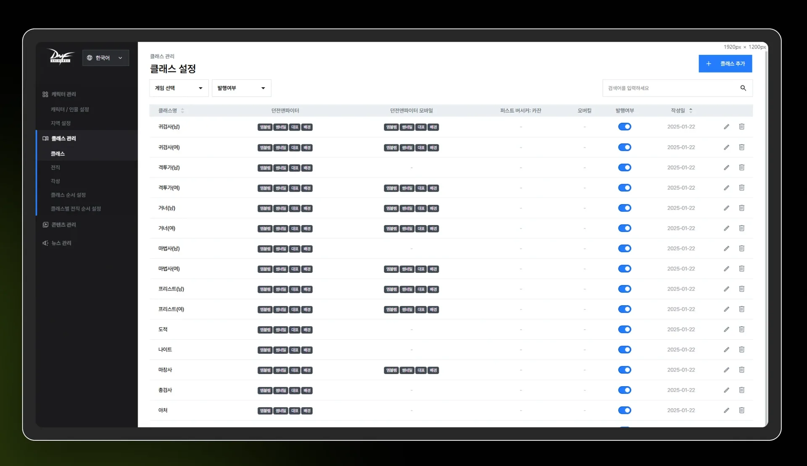
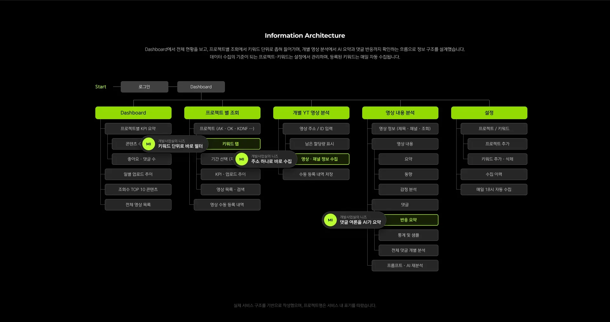
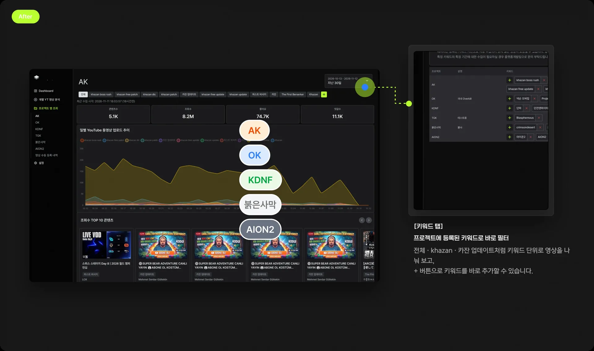
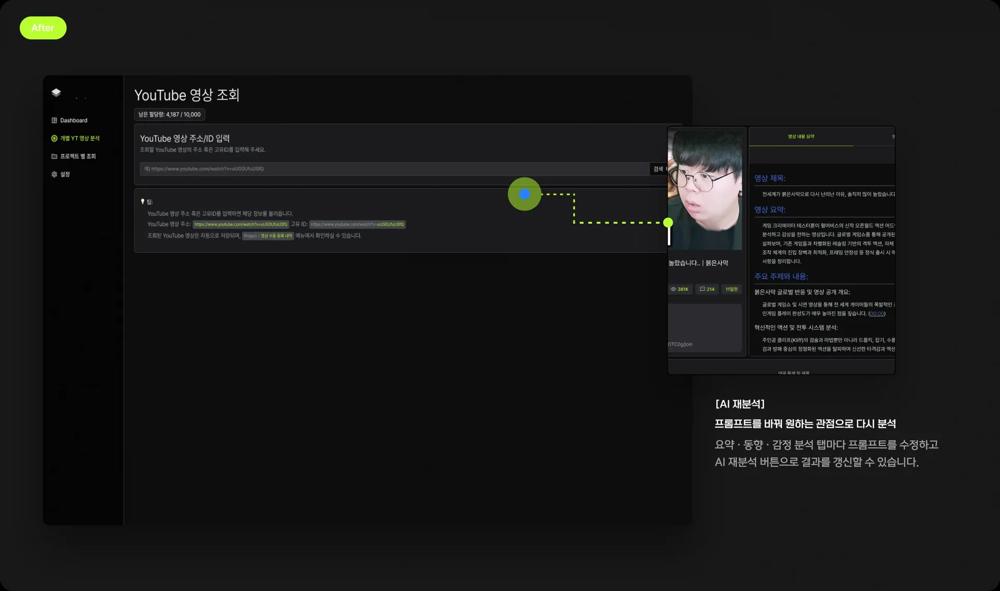
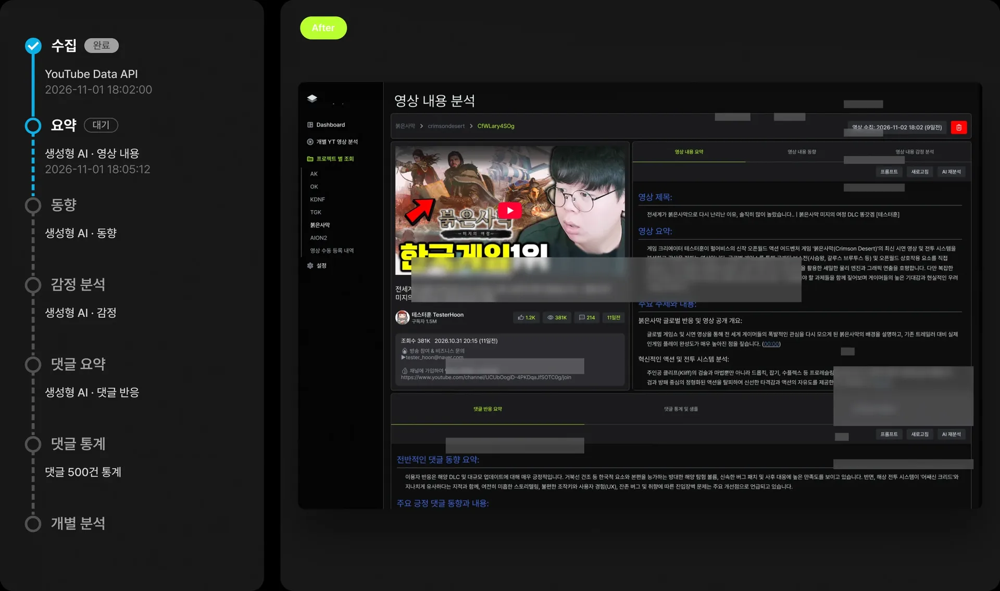
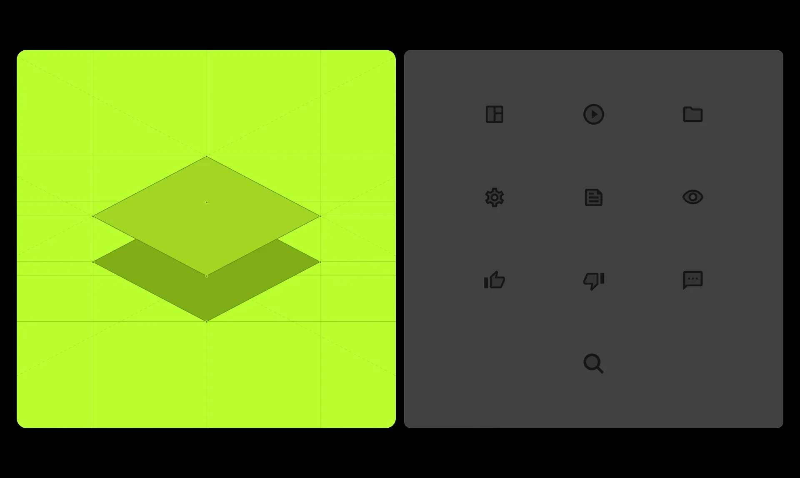

미디어 인사이트
미디어 인사이트는 NEOPLE 주요 프로젝트를 다룬 YouTube 영상과 채널 정보를 키워드 기반으로 자동 수집하고, 조회수 · 댓글 같은 버즈 데이터를 프로젝트 단위로 모아 보여주는 대시보드형 애널리틱스 서비스입니다.
수집된 영상과 댓글은 생성형 AI가 요약 · 주제 · 감정까지 정리해, 영상을 끝까지 보지 않아도 반응을 한눈에 파악할 수 있습니다. 개발사업실의 니즈로 시작된 신규 구축 프로젝트로 대시보드 · 프로젝트별 조회 · 개별 영상 분석 · 설정 화면을 설계했습니다.

01 — Overview
프로젝트의 버즈를 매일 자동으로 모아
생성형 AI로 읽는 애널리틱스
개발사업실은 프로젝트별 영상 반응을 확인하기 위해 YouTube를 직접 검색하고 엑셀로 정리해 왔습니다. 수집 기준이 그때그때 달랐고, 영상 내용과 댓글 여론은 하나하나 봐야만 알 수 있었습니다.
그래서 키워드만 등록하면 매일 자동으로 수집되고, 생성형 AI가 영상과 댓글을 요약해 주는 별도 웹 서비스로 신규 구축했습니다.
Scope
대시보드 · 프로젝트 조회 · 영상 분석 · 설정
4개 화면 + 데이터 수집 · AI 분석 플로우
With
개발사업실 · 개발팀
니즈 정의 · 지표 선정 / 수집 · AI 분석 구현
02 — Approach
내가 사용자라면
어떤 화면이 편할까
기존 YouTube 영상 집계 대시보드를 참고하고, 사용자 입장에서 어떤 방향이 편리할지 고민하며 세 가지 기준을 세웠습니다.
01
사용자 관점
무엇을 먼저 보고 싶은지, 어디서 막히는지를 기준으로 화면 순서를 정했습니다.
02
익숙한 패턴
이미 익숙한 KPI 카드 · 추이 차트 구조를 가져와 학습 비용을 줄였습니다.
03
다크 UI
그래프와 영상 썸네일이 배경보다 먼저 보이도록 다크 모드를 적용했습니다.
03 — Information Architecture
전체 현황에서 개별 영상과 댓글까지
Dashboard에서 전체 현황을 보고, 프로젝트별 조회에서 키워드 단위로 좁혀 들어가며, 개별 영상 분석에서 AI 요약과 댓글 반응까지 확인하는 흐름으로 설계했습니다. 수집 기준이 되는 프로젝트·키워드는 설정에서 관리하며 매일 자동 수집됩니다.

실제 서비스 구조를 기반으로 작성했으며, 프로젝트명은 서비스 내 표기를 따랐습니다.
04 — Dashboard
프로젝트별 버즈 현황을
한 화면에서 비교
Why · UX Rationale
오늘 무엇이 달라졌는지
첫 화면에서 바로 보이게
운영자가 매일 처음 여는 화면이라 "오늘 무엇이 달라졌나"에 바로 답해야 했습니다. 결과 → 원인 → 근거를 확인하는 순서대로 KPI → 추이 → TOP 콘텐츠를 배치했습니다.
What · Solution
KPI 요약
콘텐츠·조회·좋아요·댓글 수를 카드로 요약했습니다.
업로드 추이
키워드별 일별 업로드 추이를 누적 차트로 보여줍니다.
TOP 콘텐츠
조회수 상위 영상을 카드로 바로 확인합니다.
05 — Project View
키워드로 좁혀 보는
프로젝트별 콘텐츠
Why · UX Rationale
쓰던 엑셀처럼
프로젝트 → 키워드 순으로
운영자가 쓰던 엑셀 구조(프로젝트 → 키워드)를 그대로 옮겨, 새 도구지만 새로 배울 것이 없게 했습니다. 영상은 제목보다 썸네일로 기억하기 때문에 TOP 10은 썸네일 카드로 두었습니다.

What · Solution
키워드 탭
키워드 탭으로 영상 목록을 한 번에 전환합니다.
기간 · 검색
기간과 제목·채널명으로 필요한 영상만 찾습니다.
키워드 추가
+ 버튼으로 수집할 키워드를 바로 추가합니다.
06 — Video Analysis
주소 하나로 영상을 수집하고
생성형 AI로 내용까지 분석
Why · UX Rationale
영상 주소만 넣으면
분석까지 한 번에
주소든 ID든 입력 필드 하나로 받아, 무엇을 넣을지 고민하지 않게 했습니다. 남은 할당량을 입력창 위에 보여주고 결과는 자동 저장해, 부담 없이 분석해 볼 수 있게 했습니다.

What · Solution
영상 조회
주소나 ID만으로 영상 정보를 불러오고 자동 저장합니다.
AI 요약
AI가 요약·주제·타임스탬프를 정리합니다.
남은 할당량
하루 조회 가능한 API 할당량을 상단에 표시했습니다.
07 — Comment Analysis
댓글 여론을
긍정 · 부정으로 읽어 내기
Why · UX Rationale
댓글 반응은 요약부터,
자세한 건 필요할 때만
수백 개 댓글을 한 번에 펼치면 읽히지 않아, 반응 요약 → 통계 → 개별 분석 순서로 나눠 필요할 때만 깊이 들어가게 했습니다. 탭마다 재분석 버튼을 두어 AI 해석의 통제권을 사용자에게 남겼습니다.

What · Solution
반응 요약
댓글 동향과 긍정·부정 주제를 AI가 요약합니다.
통계 및 샘플
긍정·부정 비율과 대표 댓글로 근거를 보여줍니다.
개별 분석
댓글마다 분석·프롬프트 버튼으로 깊이 들여다봅니다.
08 — Icons & Colors
Media Insight, Collect Widely · Analyze Deeply · See Clearly

BlackRGB 11/11/11 · #0B0B0B
LimeRGB 186/255/48 · #BAFF30
Dark GrayRGB 28/28/30 · #1C1C1E
WhiteRGB 255/255/255 · #FFFFFF
Typography
Aa123
Pretendard
Media Insight,
Collect Widely
Analyze Deeply
See Clearly
ABCDEFGHIJKLMNOPQRSTUVWXYZ abcdefghijklmnopqrstuvwxyz 1234567890 .:?!@*&%